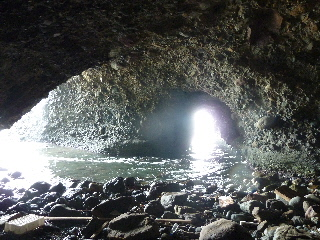
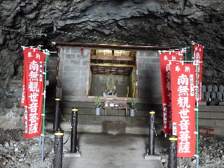
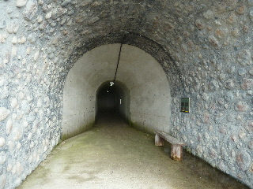
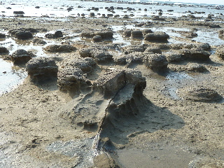
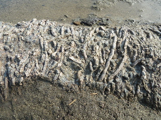
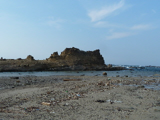
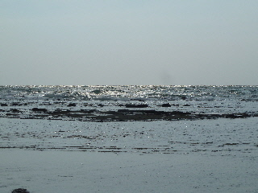

畳ヶ浦を観光しました。
2013/08/04
畳ヶ浦は初めてです。
トンネルを通って行くんですね。

トンネルの途中にはこんな景色がありました。

菩薩様もいらっしゃいました。
暗いところにあるのでとっても神秘的な感じがしました。

長いトンネルを抜けると、下の写真みたいな景色が広がります。

ポコポコとしたのが沢山あるんですね。
なんか凄い！
なんで？って感じですね。
これはいい観光地です。
いいもの見れました。

こんな化石もゴロゴロありました。

これが馬の背っていうそです。何がいいんだろう？わかりませんでした。

遠くまで岩が続く浅瀬で、あんまり泳げそうな場所じゃないんですけど、海水浴のお客さんが沢山いらっしゃいました。
ちょっと変わった場所での海水浴ってなんか思い出に残りそうですね。